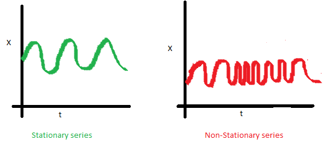
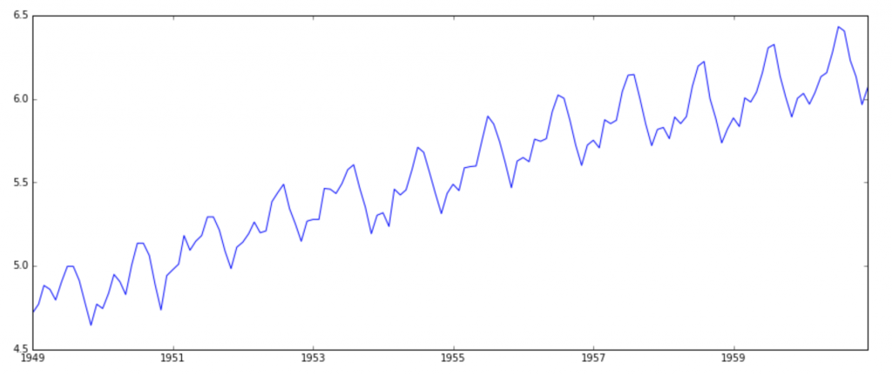

Time Series Analysis
by
Siavash Kavousi
Sadegh Mahmoudpour
Outline
Introduction
Patterns
Types
Models
A time series is a ...
series of data points indexed (or listed or graphed) in time order
Minimum daily temperature

Importance of time series analysis
- A very popular tool for business forecasting
- Basis for understanding past behavior
- Can forecast future activities/planning for future operations
- Evaluation of performance
Data types
- Time series data
- Cross sectional data
- Panel data
Time series data
- Sequence of data points where order indicates successive measurements over time
- In a time series data set, the time data field makes one data record unique from the other records
Time Series Patterns
- Trend
- Seasonal
- Cyclical
- Random
Trend
a long term pattern
value at time t which is regressed on a time trend
$Y_t = α + β_t + ε_t$
Seasonal
a pattern in a frequency of occurrence -> within a year or even shorter
Cyclical
like seasonal a repeated pattern but beyond a frequency of one year
Random
no particular pattern
value at time t is regressed on the last period's value
$Y_t$ = last period value + error(noise)
$Y_t = Y_{t-1} + ε_t$
Time series modeling
- Stationary series
- Non-stationary series
Stationary series

Stationary series
Transformation
stationarizing the series
Differencing
Differencing
ts_log_diff = ts_log - ts_log.shift()
plt.plot(ts_log_diff)